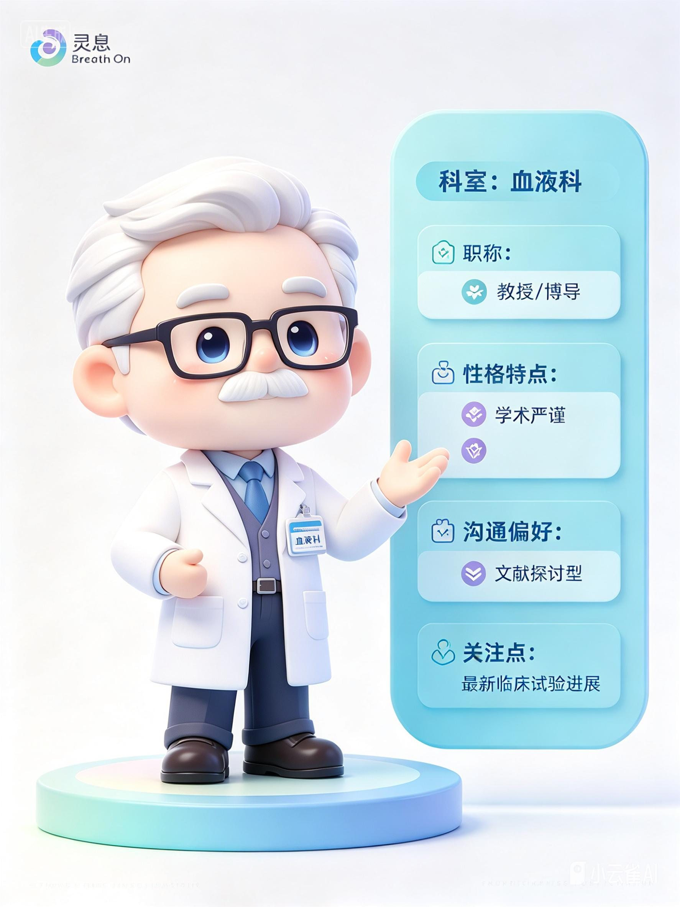
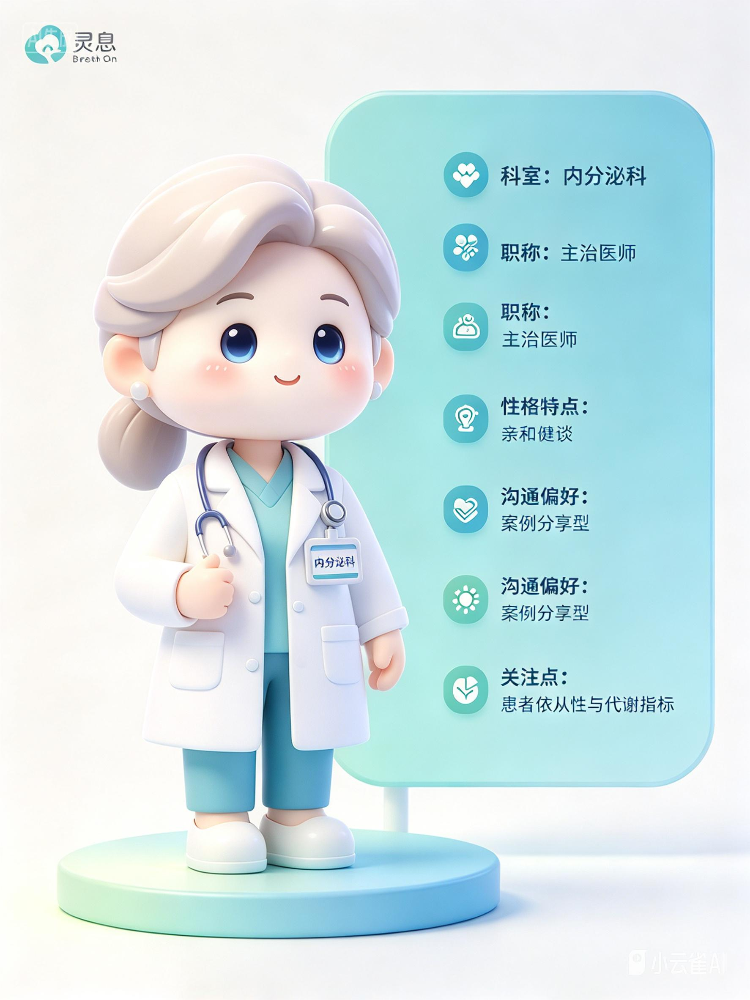
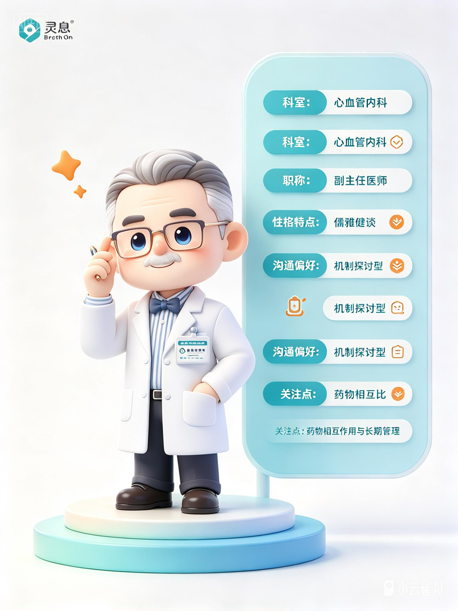
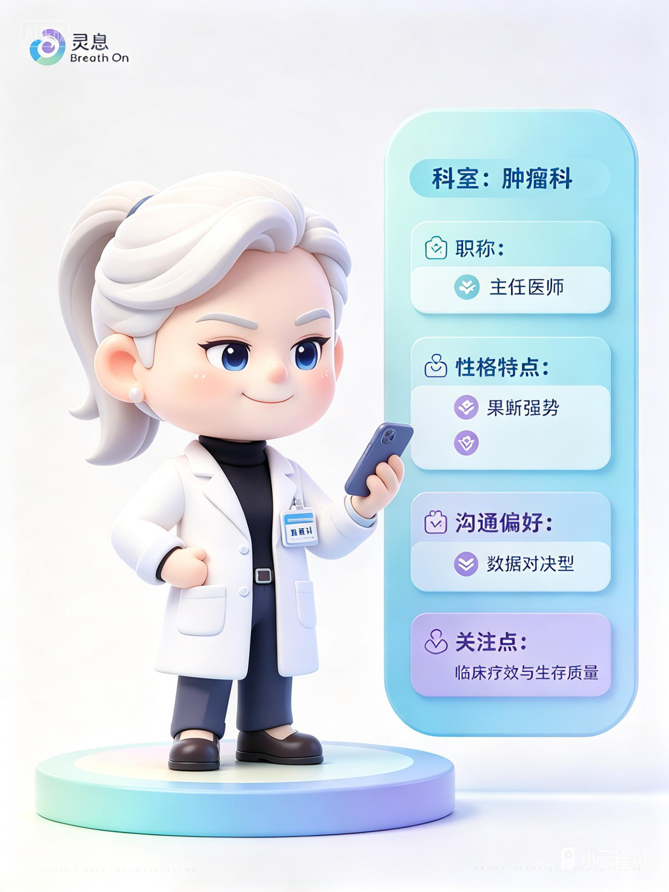
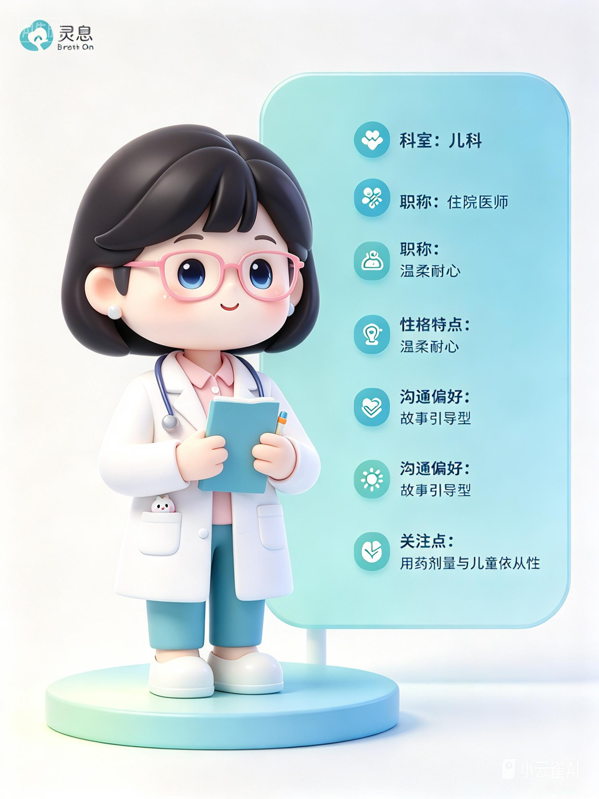

灵息 BREATHON · 管理后台全界面展开稿 桌面端信息架构 · 适合导入 Figma
B01 · 总览
灵
BreathOn管理后台admin
管理后台
产品、医生 IP、培训和合规内容的统一工作台
产品内容20
医生 IP7
训练模块12
待审核8
常用入口
医生 IP 管理按科室和沟通偏好查看
训练内容配置 L1-L4 训练
审核队列处理待发布内容
代表记录查看训练复盘
最近动态
乳腺外科 IP 已更新10 分钟前
一条训练话术进入审核1 小时前
新增代表复盘记录昨日
B02 · 药品管理
灵
BreathOn管理后台admin
药品管理
产品、疾病线、证据边界和推荐医生 IP
名称、疾病、靶点或地区
归属：全部
状态：全部
管理分类表 ⌄
唯择®CDK4/6 · 乳腺癌 · 已发布
维复素®FLT3 · 血液肿瘤 · 已发布
肿瘤综合产品组合多癌种 · 待审核
丙酮呼气数据源项链探索性代谢数据 · 草稿
唯择®
CDK4/6 相关产品 · 乳腺癌
治疗领域肿瘤
阶段已上市
推荐 IP乳腺外科
内容与证据边界
按批准内容和正式研究表达，优先匹配数据驱动型医生。
B03 · 医生 IP / 七类管理
灵
BreathOn管理后台admin
医生画像
根据科室、疾病线、职称和沟通偏好生成拜访入口。
科室、偏好、疾病线
疾病线：全部
沟通风格：全部

血液科医生教授 / 博导 · 文献探讨型

乳腺外科医生主任医师 · 数据驱动型

内分泌科医生主治医师 · 案例分享型

全科门诊医生副主任医师 · 务实疗效型

心血管内科医生副主任医师 · 机制探讨型

肿瘤科医生主任医师 · 数据对决型

儿科医生主治医师 · 故事引导型
B04 · 用户画像
灵
BreathOn管理后台admin
用户画像
管理代表、医生和健康管理用户的任务与需求。
医药代表
需要快速找证据、适配医生、推进下一步并完成复盘。
医生用户
关注与临床决策有关的证据、终点、案例和可操作性。
健康管理用户
获取代谢反馈，控制隐私授权，自主选择是否上传数据。
代表用户的关键指标
知识掌握度产品与疾病线
沟通能力证据匹配与合规
结果推进指数
B05 · 政策管理
灵
BreathOn管理后台admin
政策管理
维护产品、医学内容、数据授权和代表沟通政策。
政策名称、疾病或适用范围
状态：全部
医药代表合规沟通指南
规范产品介绍、证据表达、异议处理和下一步推进。
项链呼气数据授权与上传政策
用户默认不上传，明确授权后才进入训练数据池。
医生 IP 脱敏与训练使用规则
医生 IP 为角色模型，不代表任何具体医生。
B06 · 训练内容
灵
BreathOn管理后台admin
训练内容
把产品知识、疾病线、医生 IP 和模拟拜访串成训练路径。
L1 公司与产品底盘
业绩资料、产品组合、证据分级与合规边界。
L2 疾病线与临床场景
肿瘤疾病线、代谢管理和长期依从性。
L3 医生 IP 与偏好识别
血液科、乳腺外科、内分泌科、全科。
L4 · 实战训练
首次拜访探索需求与疾病线匹配
质疑证据终点、样本量、对照组和证据边界
推进下一步资料交换、复访和行动收束
B07 · 审核队列
灵
BreathOn管理后台admin
审核队列
医生画像、政策、训练内容的发布前审核。
| 内容 | 类型 | 提交人 | 更新时间 | 状态 | 操作 |
|---|---|---|---|---|---|
| 代谢数据授权与上传话术 | 政策 | 内容组 | 2026/10/31 | 待审核 | |
| 乳腺外科 · 数据驱动型医生 IP | 医生画像 | 教练组 | 2026/10/31 | 待审核 | |
| 质疑证据 · 血液科模拟对话 | 训练内容 | 华东团队 | 2026/10/30 | 待审核 |
B08 · 代表记录
灵
BreathOn管理后台admin
代表记录
训练、模拟拜访和复盘结果会保留审计记录。
搜索代表、场景、医生 IP 或日期
| 代表 | 训练场景 | 医生 IP | 综合得分 | 状态 | 操作 |
|---|---|---|---|---|---|
| 林晓 | 质疑证据 | 血液科 · 文献探讨型 | 92 | 已完成 | |
| 周宁 | 首次拜访 | 乳腺外科 · 数据驱动型 | 86 | 已完成 | |
| 陈默 | 推进下一步 | 内分泌科 · 案例分享型 | 78 | 中断 |
B09 · 系统设置
灵
BreathOn管理后台admin
系统设置
管理服务状态、数据权限、内容版本和审核规则。
服务状态
医生 IP 推荐
训练评分服务
数据上传到代表端
内容版本
业绩资料2026 H1
医生画像模型v1.4
训练评分规则v2.1
数据与合规
用户代谢数据默认不上传，明确授权后才进入代表训练数据池；项链呼气数据仅作为探索性辅助信息。
审核规则
药品正式信息双人审核
医生画像管理员审核
训练话术医学 + 合规审核